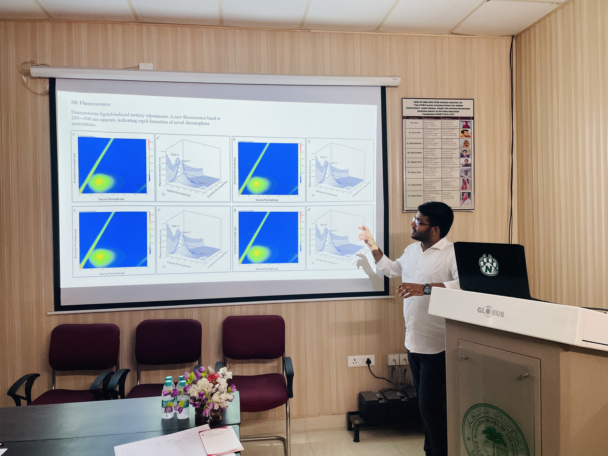
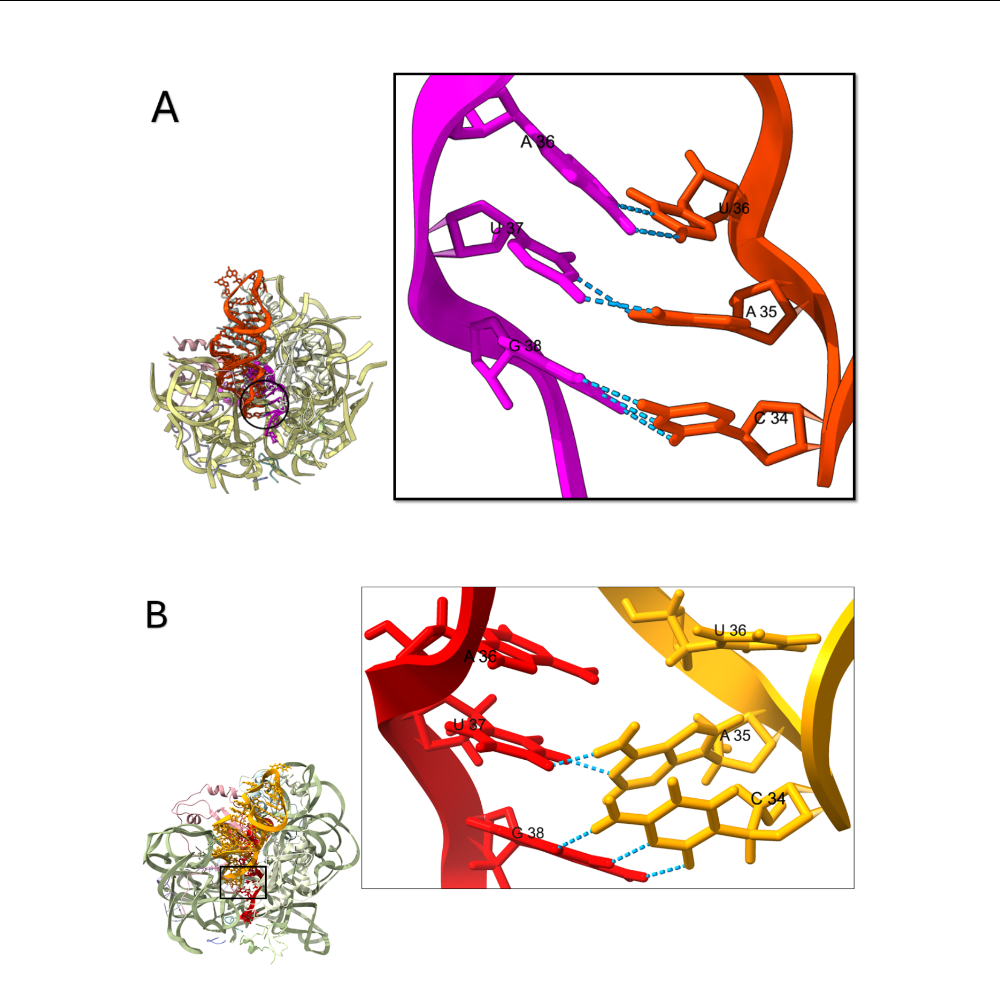

Structure first.
Function follows.
Talha Mukhtar — I'm a Biochemistry graduate from Aligarh Muslim University chasing one question through every method I can find: how does the shape of a molecule decide what it's allowed to do? I've followed it through ribosome simulations, protein spectroscopy, and cloning benches alike — and I'm now looking for a PhD in structural or RNA biology where I can keep doing both.

Upload as images/portrait.jpg
(recommended 4:5 ratio)
A biochemist who thinks in structures
I care about connecting a molecule's structure to what it actually does inside a cell — why a ribosome starts translating at an unusual codon, or how a protein's conformation responds to its environment. I like staying close to the data itself: running simulations, but just as often generating that data myself at the bench, through cloning, expression, and spectroscopy. I'm building toward a research career that keeps both sides — computational and experimental — in the same hands.
Thesis: Elucidating the translation initiation mechanism in non-optimally positioned Shine-Dalgarno sequence contexts, supervised by Dr. Tanweer Hussain, Dept. of Developmental Biology & Genetics, IISc Bengaluru.
Structural biology or RNA biology programmes working on translation, ribonucleoprotein complexes, or structural dynamics — where I can bring both simulation and wet-lab experimental skill sets.
Research Experience
Five placements, four supervisors, one recurring question: how does structure dictate function. Each card below has a space for lab photos — drop yours in from the corresponding placement.
Supervisor: Dr. Tanweer Hussain, Dept. of Developmental Biology & Genetics
- 170 ns all-atom MD simulation (GROMACS / AMBER14SB) of a ribosomal cut-out (PDB: 5LMQ); identified instability of the 5′ start codon–anticodon base pair as the structural basis for non-canonical start codon (GUG, UUG) usage.
- Genome-wide analysis of ~4,000 E. coli SD-led genes — protein abundance explains only ~1.6% of translation initiation rate variance (R²=0.016).
- Optimised a β-galactosidase reporter assay and chpS 5′ UTR cloning pipeline for experimental validation.

Supervisor: Dr. Asim Rizvi, Dept. of Biochemistry
- Multi-spectroscopic characterisation (UV-Vis, intrinsic/synchronous/3D fluorescence, CD) of glucose- and copper(II)-induced conformational change in BSA; glucose acts as a conformational primer that opens copper-binding sites.
- Showed the glucose–copper interaction is non-additive: copper stabilises α-helical structure at low glucose, but this effect is lost at hyperglycaemic concentrations — consistent with albumin changes seen in diabetes.
- Detected early Maillard intermediates (Schiff bases, Amadori products) via 3D EEM fluorescence.
- Contributed to a parallel HSA–copper study; manuscript under review at Discover Oncology.
or lab bench photo
Supervisor: Prof. Asad Ullah Khan, Interdisciplinary Biotechnology Unit
- Epidemiological assessment of colistin resistance across clinical and environmental samples via genomic data retrieval (NCBI), BLAST, and phylogenetic analysis (MEGAX, ResFinder, PlasmidFinder).
or IBU lab photo
Supervisor: Dr. Mohd Sajid Khan, Dept. of Biochemistry
- Synthesised amoxicillin-bioconjugated gold nanoparticles (Am-GNPs) using BSA as capping agent.
- Characterised via UV-Vis, DLS, and Zeta potential; confirmed antimicrobial activity against K. pneumoniae, S. abony, and B. pumilis.
or DLS plot
In the Lab
A visual record of the instruments and moments behind the data — swap each tile below for your own photo (name the file to match the label for easy tracking).
Tip: keep a consistent aspect ratio (4:3) across your gallery photos for a clean grid — crop before uploading if needed.
Publications, Posters & Talks
Manuscript, conference posters, and workshop presentations — with holders ready for your PDFs, poster scans, or embedded Google Slides.
Temporal changes in the structure of Human Serum Albumin in the presence of copper may have implications in developing cancer chemotherapy and diagnosis
Discover Oncology, submitted (under review) — Contributing author.
Poster Presentation
MMS-Induced Toxicity and DNA Damage in Human Peripheral Lymphocytes — Drug Discovery 2025, Jamia Millia Islamia, New Delhi (Feb 2025)
Upload a high-res scan or
photo of your printed poster
(portrait, 3:4)
Conference & Workshop Talks
5th Summer School — Multidisciplinary Collaboration & Innovation
Airlangga University, Indonesia
1st J&K International Conference on Breast Cancer
University of Kashmir
Bio-IT Workshop — Single Cell Data Analysis
Institute of Bioinformatics and Applied Biotechnology, Bangalore
Embed a Slide Deck
To embed a thesis defence deck or conference talk: open your Google Slides file → Share → Publish to web → Embed → copy the <iframe> code and paste it in place of the holder below.
Skills & Techniques
A working toolkit that spans simulation, sequence, bench, and spectroscopy.
Computational
Molecular Biology
Microbiology
Biophysics
Honours, Certifications & Leadership
Recognition, credentials, and time spent outside the lab.
Honours & Awards
GATE (XL, Life Sciences) — Qualified
IIT Roorkee
IIT JAM (BT, Biotechnology) — Qualified
IIT Delhi
Sir Syed Mentorship and Assistance Fellowship (SSMAF)
Awardee
Mrs. Zakia Saleemuddin Scholarship
Merit scholarship for academic excellence, AMU
Certifications
Leadership & Extracurricular
- Student Representative, Anti-Ragging Committee, Dept. of Biochemistry, AMU
- Class Representative, B.Sc. Biochemistry, AMU — built a resource-sharing platform used by 100+ students
- PR Coordinator, Training and Placement Office, AMU
- PR Committee Member, AMU Literary Festival 7.0 (May 2023)
- Volunteer, National Service Scheme, AMU (Nov 2022 – Nov 2024)
Let's talk research
Open to PhD supervisors, collaborators, and anyone curious about ribosomes reading codons they weren't quite built for.
Optional — e.g. a QR code linking
to your CV PDF or LinkedIn